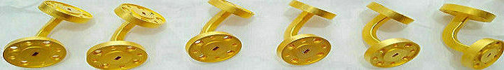
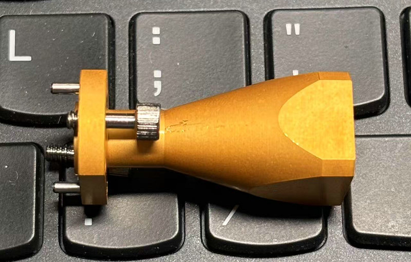
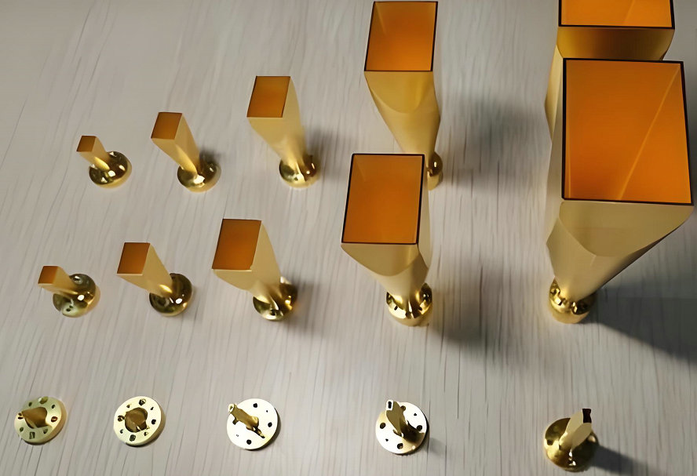
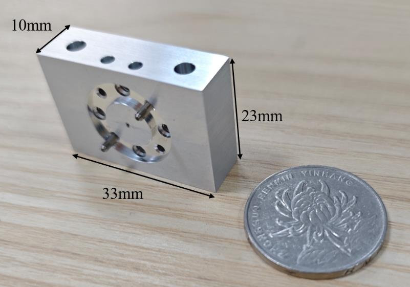
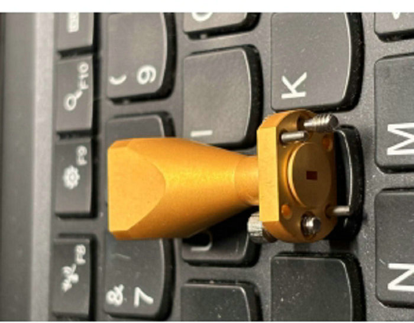

Nanjing, world’s first 6G city, deploys mmWave/THz communications, satellite phased devices, satellite Internet, and terminals for ultra-fast connectivity.
As the world's first 6G city, Nanjing aggressively promotes 6G technologies, specifically mmWave, millimeterwave, and terahertz (THz) cutting-edge communications, by deploying satellite phased-array devices, satellite Internet, and various terminals such as advanced mmWave industry terminals, enabling seamless, ultra-fast, and robust mmWave/THz connectivity for diverse urban and low-altitude real-world key applications.
{kind=link}
{kind=link}
The world’s first 6G network field test has been successfully launched in Nanjing, China, marking a historic milestone in next‑generation wireless communication. At the heart of this breakthrough is not only advanced system design but also ultra‑precise hardware manufacturing – an area where our company plays a critical role.
We are proud to have participated in the precision machining of terahertz (THz) and millimeter‑wave (mmWave) waveguide cavities and structural components – essential building blocks for 6G core devices. These components demand micron‑level tolerances and near‑optical surface finishes, especially in the THz frequency range. Our expertise ensures that signal integrity, low loss, and repeatable performance are achieved at the highest levels.
 
{kind=link}
{kind=link}
Nanjing is rapidly accelerating the industrial application of 6G technologies, including mmWave/THz cellular‑free communications and deterministic wireless access. The city has officially released four flagship products: AAU series communication‑sensing devices, AI‑Edge integrated intelligent computing‑sensing‑control machines, mmWave industry terminals, and satellite phased‑array terminals. In parallel, three dedicated network solutions – mmWave wireless private networks, low‑altitude communication‑sensing infrastructure, and satellite Internet – are being deployed to empower manufacturing, urban governance, and the low‑altitude economy.
The Nanjing THz/mmWave communication team is pushing performance to theoretical limits. Their core goal for 6G air interface is end‑to‑end latency as low as 100 microseconds, reliability of 99.99999%, and jitter down to the microsecond level. This would allow countless industrial devices in a smart factory to synchronize wirelessly with the precision of a human nervous system.


The mmWave/THz systems developed in Nanjing simultaneously support communication and sensing, deliver deterministic low latency, and integrate ground‑to‑low‑altitude sensing‑communication‑computing capabilities. These products are low‑power, compact, lightweight, and perfectly suited for diverse industry needs – from industrial automation and low‑altitude logistics to satellite networks.
6G technology is no longer a laboratory concept. It has entered low‑altitude economy, industrial manufacturing, smart city management, telemedicine, and ecological protection. One live example: in the Nanjing Low‑Altitude Economy Industrial Park, a “6G + low‑altitude inspection” scenario is already running daily. Drones equipped with 6G modules patrol a highway section, streaming ultra‑HD images of road damage and facility faults to a backend platform in real time. The inspection efficiency is several times higher than traditional methods.
Nanjing has set ambitious targets for 2027: at least six major 6G research breakthroughs, 100 new enterprises commercializing 6G technologies, and more than 50 vertical application scenarios – all under the vision of building a global “6G City” and a pioneer zone for the 6G industry.
Your Partner in Terahertz Precision,As Nanjing advances toward a fully connected, intelligent future, our company remains at the forefront of THz and mmWave hardware manufacturing. Whether you need custom waveguide cavities, attenuator housings, or any precision‑machined components for terahertz systems – send us your drawings for a competitive quotation.